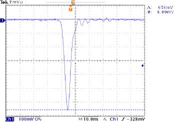

The signal occurs when the photomultipler tube very quickly discharges millions of electrons. This looks like a surge in the voltage in the wire connected to the data acqusition board. The signal has a characteristic shape--sometimes called a pulse--in which the voltage smoothly drops to a low point and then smoothly increases to zero. Depending on the PMT, this signal can last for a few to 50 nanoseconds."<BR>

